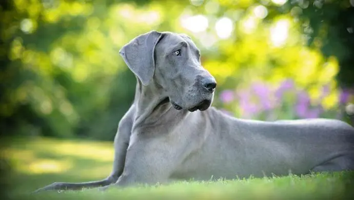

Gran Danés
Personalidad
El gran danés es un perro cariñoso. Puede sentirse muy unido y ser muy fiel a su familia, así como a las visitas más frecuentes, y encaja muy bien en una familia activa. Alertan rápidamente a la familia si se acerca un extraño a su territorio, ya que son excelentes perros guardianes. Es esencial socializar y adiestrar a los cachorros, tratándose de un perro tan grande.
Origen
En tumbas egipcias de 2200 a. C. se han visto imágenes de perros que recuerdan al gran danés. Tenían las patas más cortas y el tipo de cuerpo recordaba al de los mastines. A través de los comerciantes, este tipo de perros llegó a muchos otros países. Fue en Alemania donde la raza evolucionó hasta convertirse en el perro que conocemos hoy. Se cree que cruzaron el tipo de mastín original con un lebrel inglés para obtener el perro más ágil y delgado que ahora conocemos como gran danés. Al principio se usaba como hostigador de toros, pero se sabe que en 1592 lo utilizaba la nobleza para la caza del jabalí. En el siglo XIX, los terratenientes los usaban para la caza mayor.